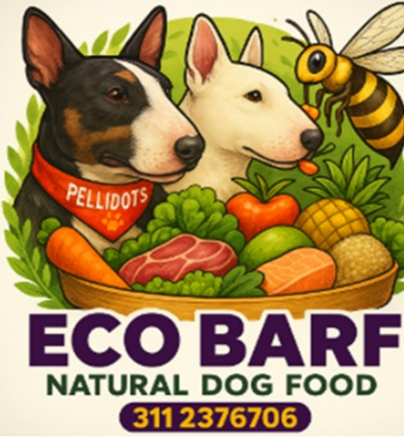

“Desde que recomiendo Eco Bar, he notado mejoras reales en la digestión.”
Leonardo Cruz – Médico Veterinario

Conoce Eco Bar. Fórmulas elaboradas con carnes frescas, frutas y verduras para garantizar la salud de perros y gatos mediante una alimentación natural.
“Desde que recomiendo Eco Bar, he notado mejoras reales en la digestión.”
Leonardo Cruz – Médico Veterinario
“Mi perro tiene más energía y mejor pelaje.”
María Fernanda López – Dueña de mascota